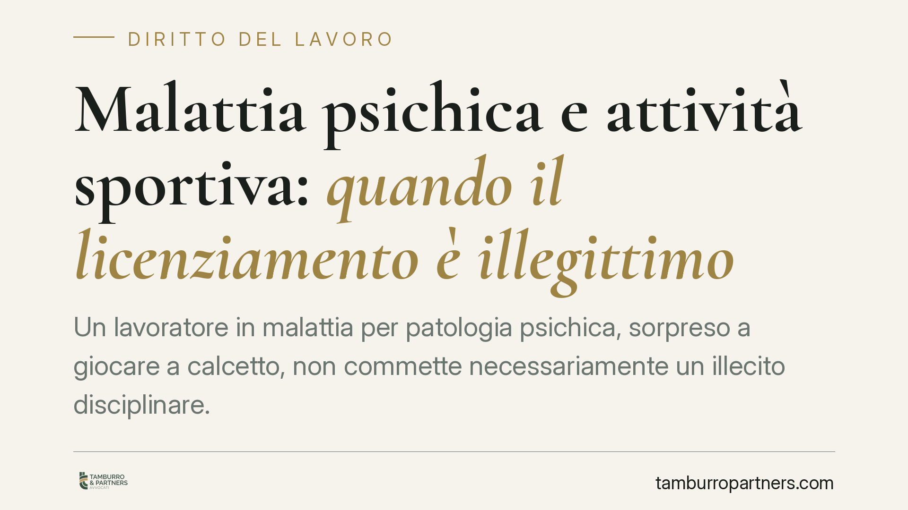

Malattia psichica e attività sportiva: quando il licenziamento è illegittimo
Un lavoratore in malattia per patologia psichica, sorpreso a giocare a calcetto, non commette necessariamente un illecito disciplinare. Una recente pronuncia di merito valorizza la cosiddetta compatibilità terapeutica: se l'attività fisica è raccomandata dagli specialisti, non pregiudica la guarigione né viola gli obblighi verso il datore. Un principio che ridisegna l'onere della prova nelle contestazioni per condotte extralavorative.

Il caso e il criterio della compatibilità terapeutica
Un dipendente assente dal lavoro per una patologia psichica viene sorpreso a praticare attività sportiva amatoriale. Il datore contesta la condotta e procede al licenziamento, ritenendo che il comportamento sia incompatibile con lo stato di malattia dichiarato.
Una recente pronuncia di merito ha dichiarato illegittimo il recesso, introducendo un criterio destinato a far discutere: la compatibilità terapeutica. Per le patologie di natura psichica, l'attività fisica non solo non è controindicata, ma è spesso raccomandata dagli specialisti come parte del percorso di cura. In questa prospettiva, praticare sport non ritarda la guarigione: la favorisce.
Si tratta, va precisato, di una decisione di merito, non vincolante per altri giudici e non equiparabile a un orientamento consolidato di legittimità. Ha però il pregio di distinguere in modo netto tra due situazioni molto diverse.
Inquadramento normativo
Il licenziamento per giusta causa trova fondamento nell'art. 2119 c.c., che consente il recesso immediato in presenza di una causa che non consenta la prosecuzione, neppure provvisoria, del rapporto. Sul piano degli obblighi del lavoratore rileva l'art. 2105 c.c. (obbligo di fedeltà), da cui la giurisprudenza ricava anche il dovere di non tenere, durante la malattia, condotte idonee a pregiudicare o ritardare la guarigione. Il quadro si completa con l'art. 2110 c.c., che disciplina la sospensione del rapporto in caso di malattia e la relativa tutela.
La Corte di Cassazione ha da tempo affermato che lo svolgimento di attività extralavorativa durante l'assenza per malattia può giustificare il licenziamento quando l'attività dimostri l'inesistenza della malattia (simulazione) oppure, pur in presenza di una patologia reale, risulti idonea a pregiudicare o ritardare la guarigione, in violazione dei doveri di correttezza e buona fede. Il punto controverso resta sempre l'accertamento in concreto di questa idoneità lesiva.
Cosa cambia in concreto
La pronuncia sposta l'attenzione sul contenuto medico-scientifico della condotta. Non basta constatare che il lavoratore fosse fisicamente attivo mentre era in malattia: occorre verificare se quell'attività fosse incompatibile con la patologia specifica.
La distinzione tra patologie fisiche e psichiche diventa allora decisiva. Un'attività fisica intensa può aggravare una lesione muscolare o articolare; per un disturbo dell'umore o ansioso-depressivo, invece, il movimento può rientrare tra le indicazioni terapeutiche. L'apparente contraddizione tra malattia e sport si dissolve alla luce della natura della patologia.
Sul piano probatorio, ciò rende più gravoso l'onere a carico del datore di lavoro. Non è sufficiente documentare la condotta extralavorativa: bisogna dimostrare che essa era concretamente idonea a compromettere il recupero. Nelle patologie psichiche questa prova è più difficile da fornire, proprio perché l'attività fisica è spesso raccomandata.
Resta però impregiudicata la diversa ipotesi della simulazione della malattia: se l'attività svolta dimostra l'inesistenza dello stato patologico dichiarato, la contestazione mantiene piena fondatezza. Il criterio della compatibilità terapeutica opera solo quando la patologia è reale.
Cosa fare in concreto
- Datore di lavoro: prima di contestare, acquisire elementi sulla natura della patologia e sull'incidenza concreta della condotta osservata sul decorso della malattia, non limitandosi alla mera constatazione dell'attività.
- Datore di lavoro: documentare l'eventuale attività investigativa nel rispetto dei limiti di legge, distinguendo tra sospetta simulazione e valutazione di compatibilità terapeutica.
- Lavoratore: conservare la documentazione medica che attesti la natura della patologia e le eventuali indicazioni terapeutiche ricevute, incluse quelle sull'attività fisica.
- Lavoratore: verificare che le condotte tenute durante l'assenza siano coerenti con lo stato dichiarato e con le prescrizioni dello specialista.
- Entrambe le parti: considerare che una pronuncia di merito non equivale a un orientamento consolidato; la valutazione va condotta caso per caso.
La materia richiede una valutazione preventiva e documentata caso per caso, calibrata sulla specifica patologia e sulle circostanze concrete.
Disclaimer
Contributo informativo a cura di Tamburro & Partners Avvocati - Avv. Giuseppe Tamburro. Non costituisce parere legale.
Ogni storia di lavoro ha i suoi tempi.
Se gestisci HR e vuoi un confronto su contenzioso, ispezioni o licenziamenti, scrivi allo studio. Ti rispondiamo entro un giorno lavorativo.